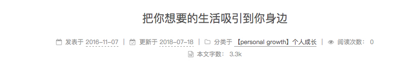
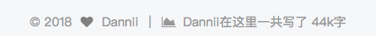
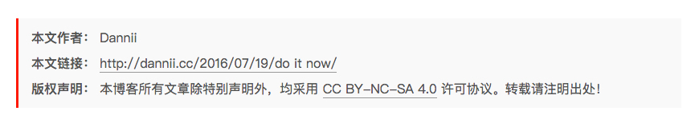
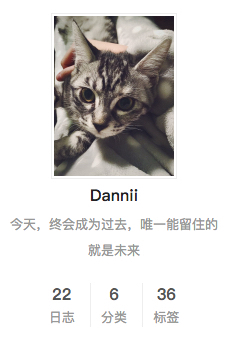
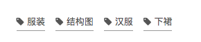
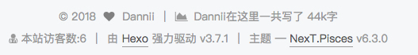
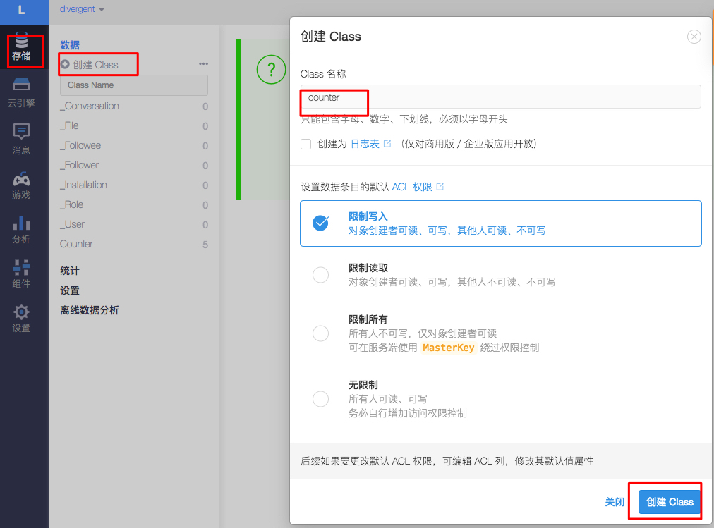
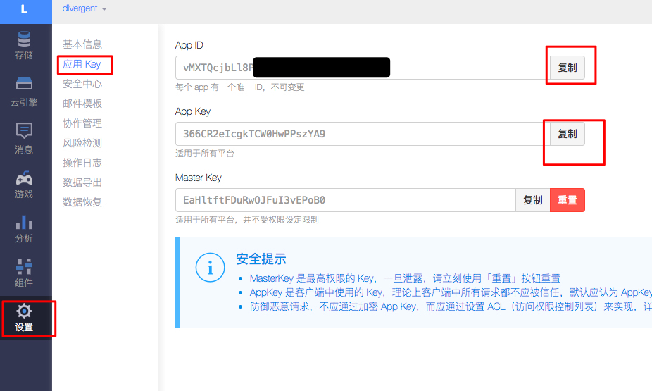

前言
作为一个纯文科生，我亲手做了一个自己的博客（骄傲脸）。这篇文，是作为我搭建博客和换电脑后迁移博客及优化的过程记录，以免我以后又忘记怎么做了。非程序猿读者们，共勉之。
至于为什么要用git和hexo，而不是傻瓜式用博客网站？可能应为我内心有个geek怪兽吧！
16年的时候，无意中看到一个RD同事的博客，才了解到Hexo是一个快速、简洁且高效的博客框架，又有搭建个人博客的想法，便动手尝试了。
因为因为我之前就已经配置过所有的设置，只是这次换电脑，所以需要在新电脑上做迁移，以及做一些优化工作。
至于如何新建结合git和hexo新建博客的话，可以看这个《Hexo+GitHub博客搭建实战》。
也可以参考我最开始学习的陈素封的教程：《如何搭建一个独立博客——简明Github Pages与Hexo教程》。
迁移开始
安装Node.js
去Node.js官网下载相应的安装包，一路安装即可。
安装Git
Mac下安装Xcode就自带Git。（Windows可以去官网）
添加SSH Keys
Github 添加 SSH Keys
首先在本地创建 SSH Keys，（直接用Mac的终端，或者Windows的找到git-git bash）
1 | ssh-keygen -t rsa -C "youremail@163.com" |
后面的邮箱即为 github 注册邮箱，也是你登录 Github 的邮箱，之后会要求确认路径和输入密码，一路回车就行。
成功的话会在 ~/下生成 .ssh文件夹，进去，打开 id_rsa.pub，复制里面的key即可。
然后我们再次测试下公钥有没有添加成功：1
ssh -T git@github.com
成功了。
之后我们再次部署我们的博客网站：1
hexo d
成功。我的个人博客网站也正常显示.
源文件拷贝
将你原来电脑上个人博客目录下必要文件拷到你的新电脑上（比如/users/yourname目录下），注意无需拷全部，只拷如下几个目录：
1 | _config.yml |
安装 hexo
在中断里输入下面指令安装 hexo：
1 | npm install hexo-cli -g |
进入/users/yourname目录（你拷贝到新电脑的目录）
输入下面指令安装相关模块
1 | cd /users/yourname //进入文件夹的指令 |
测试
这时候使用 hexo s 基本可以看到你新添加的文章了。
关于hexo的测试连接localhost:4000有时候出现看不了的情况，可参考最后面的错误解决方案。
部署发布文章
1 | hexo clean // 清除缓存 网页正常情况下可以忽略此条命令 |
更换Hexo主题
主题选的是NexT，我安装的时候还是16年，现在最新更新的Github网址为https://github.com/theme-next/hexo-theme-next
首先将NexT的主题源文件下载到本地，使用Git克隆指令如下：
1 | git clone https://github.com/theme-next/hexo-theme-next.git |
下载后，将压缩包解压缩(文件位于指令运行的当前目录)，复制其中名称为hexo-theme-next的文件夹到Hexo的主题目录下，主题目录的路径为：Hexo博客根目录/themes/
在Hexo根目录下有一个以_config.yml命名的文件（下称==站点配置文件== ），用Sublime/NotePad++等文本编辑器打开，在其中找到theme属性，将其由landscape改为next。
然后在Hexo根目录执行部署Hexo指令：
1 | hexo clean // 清理缓存 |
便可以在远程的博客上看到修改主题后的样式了。
设置Hexo主题模式
看到上图，读者可能会产生疑问，为什么自己的主题样式和笔者的不一样，这是因为在Hexo主题中，有四种不同的模式，通过切换模式，让NexT主题显示不一样的样式。
在NexT根目录下有一个同样名称为_config.yml，为了区分hexo根目录下的_config.yml，将前者称为主题配置文件，在其中找到scheme属性，如下图所示：
1 | Schemes |
NexT主题默认使用Muse模式，我采用的是Pisces模式，读者可根据自己的喜好，选择其中一种模式。
修正图片显示问题
经过上面的配置后，发现上传的博客文章里面的本地图片居然显示不来（没有同步上传）。
于是，找到解决方案：
把主页配置文件中的
_config.yml里的post_asset_folder:这个选项设置为`true在你的hexo目录下执行这样一句话
npm install hexo-asset-image --save，这是下载安装一个可以上传本地图片的插件等待一小段时间后，再运
行hexo n "xxxx"来生成md博文时，/source/_posts文件夹内除了xxxx.md文件还有一个同名的文件夹最后在xxxx.md中想引入图片时，先把图片复制到xxxx这个文件夹中，然后只需要在xxxx.md中按照markdown的格式引入图片：
1

注意：xxxx是这个md文件的名字，也是同名文件夹的名字。只需要有文件夹名字即可，不需要有什么绝对路径。你想引入的图片就只需要放入xxxx这个文件夹内就好了，很像引用相对路径。
现在只需要直接在括号里写上你的图片名称就行，不用加博客文件名，我看了官方文档才知道。所以多看一眼官方文档才是正经事儿。
hexo s，运行本地服务器，打开http://localhost:4000/可实时查看修改情况。hexo d，同步到github。
设置预览摘要
设置完模式后，读者们会发现，尽管首页显示的是所有文章的列表，但是每一篇文章都显示了所有内容，这样感觉看起来不舒服，这时候可以启用预览摘要模式，在主题配置文件中找到auto_excerpt属性，将enable设置为true，将length设置为想要预览到的字数，如下图所示：
1 | auto_excerpt: |
这里说明一下：上述的部署指令中hexo deploy可以换成hexo server，两者的区别在于，前者是将博客部署到远程的Github上，而后者是运行在本地，通过http://localhost:4000在浏览器中访问。后者是为了调试配置方便而使用，但是最终本地博客还是需要hexo deploy指令将其部署至Github上。
另外，不知道为什么设置预览之后，我文章内的头图不会展示，所以，设置预览之后展示头图，可以在*.md文件头部添加photos:，这样就可以在首页显示图片了1
2
3
4
5
6
7
8
9
10
11title:
categories:
tags:
copyright: true
comments: false
description:
date: 2017-11-09 14:33:32
top:
photos:
- "http://oz2tkq0zj.bkt.clouddn.com/17-11-9/52323298.jpg"
添加评论功能
之前我用的友言，结果特别不好用，才发现原来是挂了，
目前的评论系统，友言，网易云跟帖都挂了。所以，我最终采用的是来必力。
添加菜单选项
默认情况下，菜单导航栏有首页、归档、关于三个选项，除此之外笔者还添加了分类、标签和关于。在主题配置文件中，找到menu属性，并去掉categories、 tags、about的的注释，如下图所示：
然后在Hexo根目录执行指令如下：
1 | // 添加分类页面 |
执行完上述指令后，在Hexo根目录/source/文件夹下创建三个文件夹，命名分别为：categories、tags、about文件夹，在这些文件夹中分别会创建一个以index命名的Markdown文件，对这三个Markdown文件内容进行修改，使之分别为：1
2
3
4
5
6
7
8
9
10
11
12
13
14
15
title: categories
date: 2017-03-12 22:06:24
type: "categories"
title: 标签
date: 2017-03-12 17:27:16
type: "tags"
title: about
date: 2017-03-12 22:07:26
type: "about"
完成文件的修改，然后部署Hexo即可完成菜单选项的添加。
显示每篇文章字数
实现方法
首先安装插件，执行以下命令：
1 | npm install hexo-symbols-count-time --save |
具体的方法都可以看官方教程：https://github.com/theme-next/hexo-symbols-count-time
然后修改主题配置文件，
1 | symbols_count_time: |
实现效果图
在每篇文章标题下会有如下效果：

显示站点文章总字数
实现方法
首先安装插件，插件安装同上（已经“显示每篇文章字数”则忽略这步）。
然后修改主题配置文件，把第七步里，那个item_text_total，改成true就行。
另外，他默认出来的样式不好看，统计的那句话还是英文，所以直接在页面代码里修改。
位置在/themes/next/layout/_partials/footer.swig文件
找到copyrightYear那里，直接修改成下面的样子：
1 | <span itemprop="copyrightYear">{{ current }}</span> |
里面的 <i class="fa fa-heart"></i>，版权信息博主名字前面，我改了系统默认的用户图标，改成小心心了。因为hexo支持FontAwesome（就是一个全是icon的网站：https://fontawesome.com/）
，只要在里面写网站所支持的icon名称hexo就能自动加载，所以我找了个heart代表小心心的icon。
实现效果图
在页面最底部会有如下效果：

文章末尾添加版权说明
直接修改文主题配置文件 ，定位到post_copyright，将enable由false改为true即可。
该字段如下：1
2
3
4
5# Declare license on posts
post_copyright:
enable: true
license: CC BY-NC-SA 3.0
license_url: https://creativecommons.org/licenses/by-nc-sa/3.0/
实现效果如图所示：

设置个人头像
通过上面切换到Pisces发现，自己的头像还是属于匿名状态，因此，我们有必要设置一下自己的头像。
实现方法
在主题配置文件 中找到avatar字段,进行修改:
1 | Sidebar Avatar |
先将avatar字段前的#删除，然后粘贴上头像的目录位置或者链接。
笔者将头像图片保存在了主题目录下的source/images文件夹，也可以存放在站点目录下的source/uploads文件夹。也可以将自己的头像图片，保存在百度网盘或者新浪微盘的某个地方，然后将对应的url地址复制过来，添加在avatar字段后即可。
其他的设置可以在主题配置文件里找到avatar相关，注释有官方网站，还有一些其他的设置，比如头像是圆还是方，可不可鼠标悬浮的时候旋转等等。
实现效果图
其效果如下图所示：

设置网站图标
实现方法
打开主题配置文件，找到以下字段，进行相应的修改：
1 | # Put your favicon.ico into `hexo-site/source/` directory. |
其中，图片web_icon.jpg存放在hexo-site/source/目录下。
然后预览，在自己的博客网站上有这样的图标：
这里我使用了小兔兔的图标，随便在网上下的无版权图片就行。
达到效果后即可部署至远程。
添加留言版块
我们还可以在菜单栏增加一个”留言板”,让他人可以通过留言板直接给我们留言。
实现方法
在博客目录中，执行以下命令，新建一个页面：
1 | hexo n page guestbook |
然后通过路径Hexo\source\guestbook找到并打开guestbook文件夹下的index.md文件，然后再文件中添加以下代码:
1 | <div class="ds-recent-visitors" data-num-items="28" data-avatar-size="42" id="ds-recent-visitors"></div> |
然后打开主题配置文件，在menu字段下，添加如下字段：
1 | menu: |
heart是留言板的图标，可以在这里（就是之前说的那个图标网站）找到自己喜欢的图标。
我用的是来必力评论系统，默认在新建页面上会产生评论板块。
实现点击出现桃心效果
实现方法
打开浏览器，输入如下网址
1 | http://7u2ss1.com1.z0.glb.clouddn.com/love.js |
然后将里面的代码copy一下，新建love.js文件并且将代码复制进去，然后保存。将love.js文件放到路径/themes/next/source/js/src里面，然后打开\themes\next\layout\_layout.swig文件,在末尾（在前面引用会出现找不到的bug）添加以下代码：
1 | <!-- 页面点击小红心 --> |
修改文章底部的#号标签
实现方法
修改模板/themes/next/layout/_macro/post.swig，搜索 rel=”tag”>#，将其中的 # 换成
实现效果图

代码块样式自定义
实现方法
打开\themes\next\source\css\_custom\custom.styl,向里面加入：(颜色可以自己定义)
1 | // Custom styles. |
其实hexo已经支持了代码高亮的设置，所以关于大代码块的高亮设置可以这样做：
首先在主页配置文件里搜索hightlight:
1 | highlight: |
文字自动检测默认不启动，所以改成true使其起作用。
然后在主题设置文件里搜索highlight_theme: normal：
注释显示有五种显示主题可用，分别是：1
2
3
4
5normal
night
night eighties
night blue
night bright
具体就看自己选择了，我这里喜欢黑色的，就选了night。
文章加密访问
实现方法
打开themes->next->layout->_partials->head.swig文件,在以下位置插入这样一段代码：
1 | <script> |
然后在文章里，头部多加一个password:xxxxx就行了。
添加社交分享
我这里使用的是needmoreshare2，next主题也支持了多种，可以看配置文件里的官方链接选择。
将目录更改为NexT目录,cd到相关位置，然后执行以下指令：1
git clone https://github.com/theme-next/theme-next-needmoreshare2 source / lib / needsharebutton
在主题配置文件中改成：1
2
3
4
5
6
7
8
9
10
11
12
13
14
15
16needmoreshare2:
enable: true
postbottom:
enable: true
options:
iconStyle: box
boxForm: horizontal
position: bottomCenter
networks: Weibo,Wechat,Douban,QQZone,Twitter,Facebook,Evernote
float:
enable: true
options:
iconStyle: box
boxForm: horizontal
position: middleRight
networks: Weibo,Wechat,Douban,QQZone,Twitter,Facebook,Evernote
更多自定义选项可以参考主题配置文件中的相关注释，postbottom部分为每篇文章的转发选项，而float部分为博客主页的转发浮动图标。可以修改的选项包括按钮风格，位置，以及社交图标。
修改字体颜色/大小/背景色
比如说，想在文章中对某一部分的文字进行强调（改变大小，颜色），该操作具体说明如下：
如果想自定义字体大小以及颜色，可以直接在 Markdown 文档中使用 html 语法：
1 | <font size=4 > 这里输入文字，自定义字体大小 </font> |
其中#FF0000为RGB颜色代码，读者可去RGB颜色查询对照表网站查找自己喜欢的颜色。
若想在RGB颜色值与十六进制颜色码之间相互转化，可查看百度。
效果如下：
这里输入文字，自定义字体大小 这里输入文字，自定义字体颜色<span style=”background-color:
#ff6600;”>这里输入文字，自定义字体背景色
这是综合起来的效果 这是综合起来的效果2实现首行缩进
由于markdown语法主要考虑的是英文，所以对于中文的首行缩进并不太友好，因此想要实现行缩进需要加上相应的代码，如下。
在需要缩进行的开头处，先输入下面的代码，然后紧跟着输入文本即可。分号也不要漏掉。
直接写:
1 | 半方大的空白` `或` `; |
添加搜索功能
笔者采用的是local search。
安装 hexo-generator-searchdb，在站点的根目录下执行以下命令：
npm install hexo-generator-searchdb --save
编辑=站点配置文件=（站点根目录下），新增以下内容到任意位置：
1 | search: |
编辑主题配置文件（主题目录下），启用本地搜索功能：
1 | # Local search |
之后部署到远程即可。
Hexo博客提交百度和Google收录
这篇文章写得很详细，我就不详细说了：
Hexo博客收录百度和谷歌-基于Next主题或者Hexo个人博客站点被百度谷歌收
添加打赏功能
首先，准备支付宝和微信二维码，怎么生成就不多说，百度。
然后在_config.yml中配置图片:
1 | reward_comment: 坚持原创技术分享，您的支持将鼓励我继续创作！ |
wechat.jpg、aipay.png图片放入themes/next/source/images中。
因为这个有个底部文字会闪烁的bug，所以还需要在next/source/css/_common/components/post/post-reward.styl里，注释wechat:hover和alipay:hover，代码如下：
1 |
|
博文置顶
目前已经有修改后支持置顶的仓库，可以直接用以下命令安装。
1 | $ npm uninstall hexo-generator-index --save |
目前按照上述方法，安装新工具之后，只需要在需要置顶文章上面加上top: true字段即可。
比如说置顶这篇文章：
1 |
|
然后，可以选择设置置顶图标。
打开：/blog/themes/next/layout/_macro目录下的post.swig文件，定位到<div class="post-meta">标签下，插入如下代码：
1 | {% if post.top %} |
在网站底部加上访问量
实现效果图

具体实现方法
打开\themes\next\layout\partials\footer.swig文件,在copyright前加上这句话：
1 | <script async src="https://dn-lbstatics.qbox.me/busuanzi/2.3/busuanzi.pure.mini.js"></script> |
然后在theme.seo上面添加显示统计的代码：1
2
3
4
5
6
7
8
9
10<div class="powered-by">
<i class="fa fa-user-md"></i><span id="busuanzi_container_site_uv">
本站访客数:<span id="busuanzi_value_site_uv"></span>
</span>
<span class="post-meta-divider">|</span>
<i class="fa fa-user-md"></i><span id="busuanzi_container_site_pv">
本站总访问量:<span id="busuanzi_value_site_pv"></span>
</span>
<span class="post-meta-divider">|</span>
</div>
在这里有两中不同计算方式的统计代码：
- pv的方式，单个用户连续点击n篇文章，记录n次访问量
1 | <span id="busuanzi_container_site_pv"> |
- uv的方式，单个用户连续点击n篇文章，只记录1次访客数
1
2
3<span id="busuanzi_container_site_uv">
本站总访客量<span id="busuanzi_value_site_uv"></span>次
</span>
添加之后再执行hexo d -g，然后再刷新页面就能看到效果
SEO优化
太复杂了，直接参考:
百度谷歌收录
同样有很详细的教程，这里不多说：
添加阅读次数统计
注册LeanCloud账号，完成激活；点击左上角的”应用”-“创建新应用”-点击“数据”右边的齿轮–点击创建类class，类名字叫做Counter。

然后，修改主题配置文件，找到leancloud_visitors，添加修改：
1 | leancloud_visitors: |
从设置中找到相应的id和key：

然后预览，就ok啦！
设置分类列表
在我们编辑文章的时候，直接在categories:项填写属于哪个分类，但如果分类是中文的时候，路径也会包含中文。
比如分类我们设置的是：1
categories: 编程
那在生成页面后，分类列表就会出现编程这个选项，他的访问路径是：1
*/categories/编程
如果我们想要把路径名和分类名分别设置，需要怎么办呢？
打开根目录下的配置文件_config.yml，找到如下位置做更改：
1 |
|
在这里category_map:是设置分类的地方，每行一个分类，冒号前面是分类名称，后面是访问路径。
可以提前在这里设置好一些分类，当编辑的文章填写了对应的分类名时，就会自动的按照对应的路径来访问。
设置标签
在编辑文章的时候，tags:后面是设置标签的地方，如果有多个标签的话，可以用下面两种办法来设置：1
tages: [标签1,标签2,...标签n]
或者1
2
3
4
5tages:
- 标签1
- 标签2
...
- 标签n
错误解决方案
localhost:4000 cannot get
第一种可能是没安装插件，输入指令：
1 | npm install hexo-server --save |
安装完成后，输入以下命令以启动服务器，您的网站会在 http://localhost:4000 下启动。在服务器启动期间，Hexo会监视文件变动并自动更新，您无须重启服务器。1
hexo server
如果您想要更改端口，或是在执行时遇到了 EADDRINUSE 错误，可以在执行时使用 -p 选项指定其他端口，如下：1
hexo server -p 5000
第二种可能，估计是npm安装问题，可以重新安装1
npm install
但当时我出现了1
2
3
4npm WARN deprecated ejs@1.0.0: Critical security bugs fixed in 2.5.5
added 10 packages from 6 contributors and audited 3766 packages in 10.51s
found 2 low severity vulnerabilities
run `npm audit fix` to fix them, or `npm audit` for details
按照指示我输入1
npm audit fix
最后一种，直接hexo g部署一下，出现所有文件generated后就可以了
hexo d的时候提示错误
提示下面错误1
ERROR Deployer not found : github
先看主页配置文件中_config.yml里deploy要是type: git，repo这个字段填`https://github.com/yourgit/yourgit.github.io.git
其他坑
目前大多都在这里，其他的可以参考网上百度，比如搭建Hexo博客中碰到的坑。